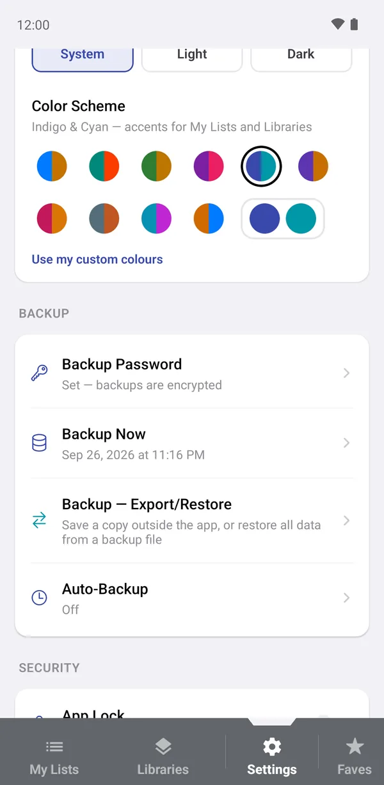
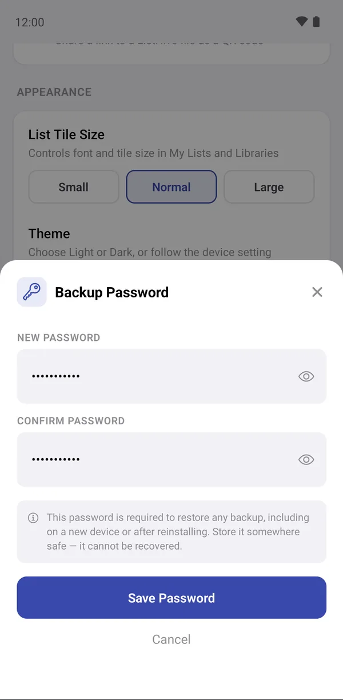
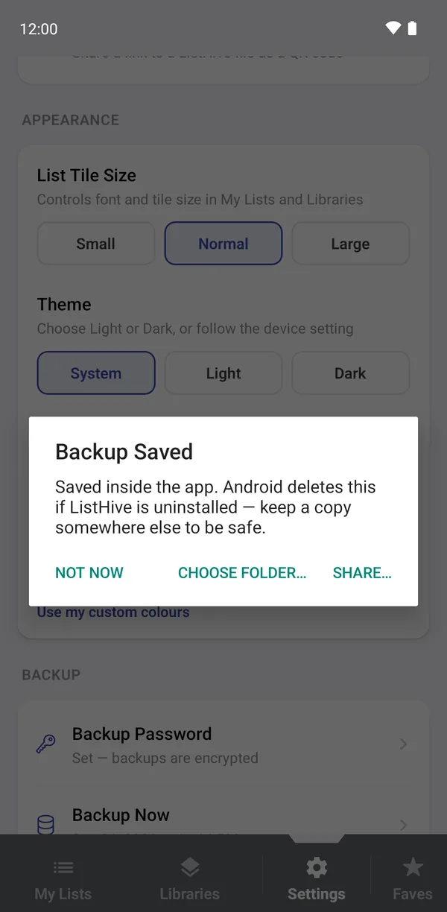
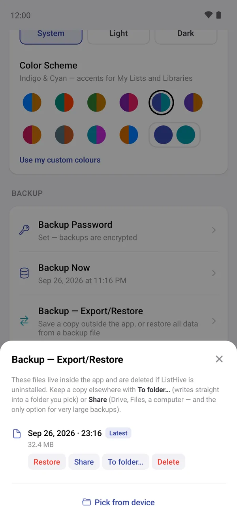
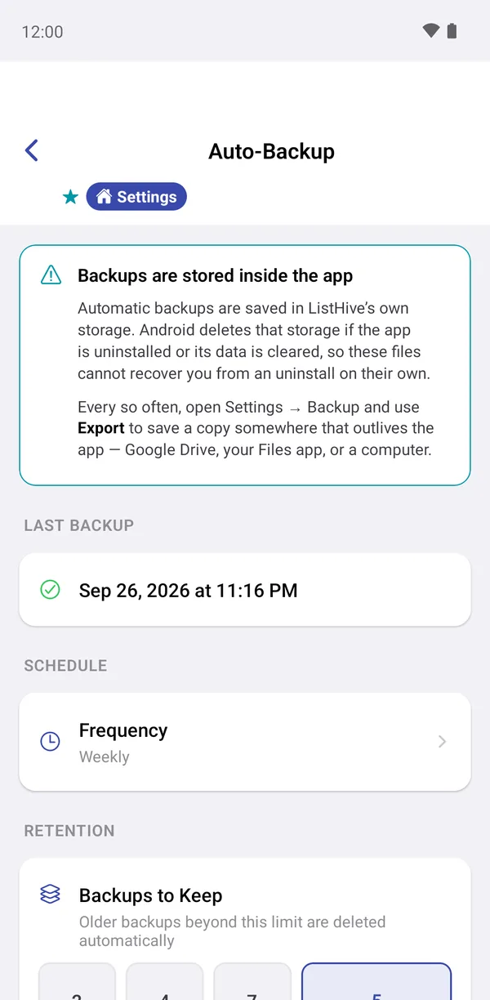
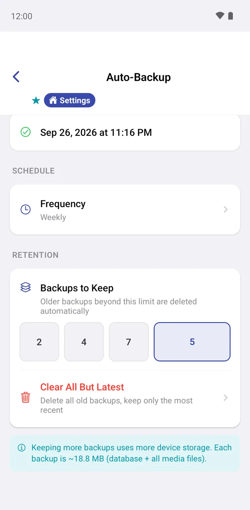
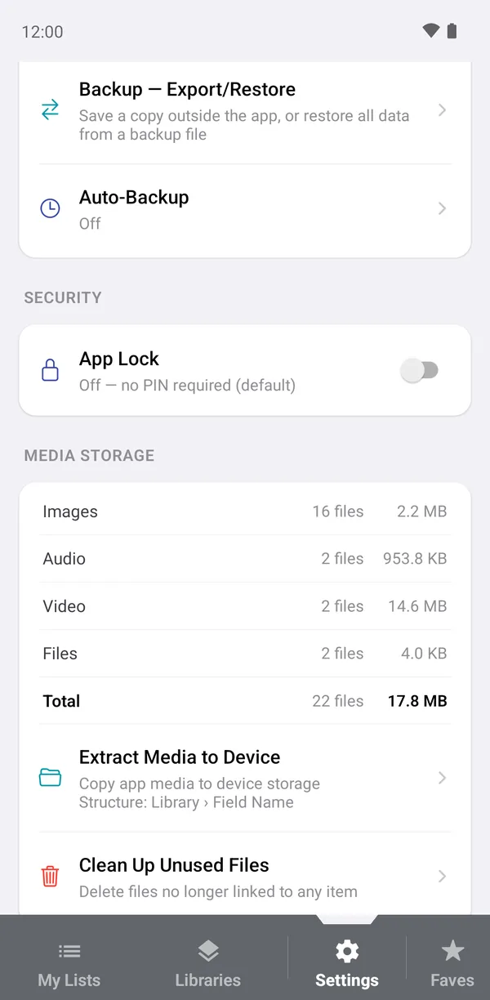

Backup & restore
ListHive keeps everything on your phone. There is no account and no cloud copy, so backups are how you protect your recipes, lists and photos against a lost phone, a new phone or an accidental uninstall.
Backups are saved inside ListHive to start with. If you uninstall the app or clear its data, Android deletes them too. Every so often, copy a backup somewhere else: Google Drive, your Files app, email to yourself, or a computer.
Everything lives in the BACKUP section of Settings:
- Backup Password: whether your backups are encrypted.
- Backup Now: with the date of your last backup.
- Backup — Export/Restore: your saved backups.
- Auto-Backup: the schedule.

Set a backup password
With a password set, every backup is encrypted, so nobody can read it without the password, even if they get hold of the file.
- Tap Backup Password.
- Enter a password of at least 6 characters, twice.
- Tap Save Password. The row now says Set — backups are encrypted.
You'll need this password to restore any backup, including on a new phone. It cannot be recovered if you forget it.
Without a password, Backup Now warns Backup is not encrypted and lets you carry on with Back Up Anyway.

Make a backup
Tap Backup Now. The backup includes everything: all libraries, lists, groups, progress, settings and every photo, video, audio note and file.
It can take a minute if you have lots of photos or videos. The example data here (about 18 MB of media) took under a minute on a test phone. When it's done you'll see Backup Saved, with three choices:
- Choose folder…: save a copy into a folder on your phone (Android).
- Share…: send a copy to Google Drive, email, or any other app.
- Not now: keep it inside the app only.
Making a backup needs plenty of free space on your phone's main storage, more than the size of your data. If a backup fails, free up some space and try again.

Keep a copy outside the app
Tap Backup — Export/Restore to see every backup ListHive has made, newest first (marked Latest). For each one:
- Share: send it to Drive, email or a computer. This works for backups of any size.
- To folder…: write it into a folder you pick. Very large backups may need Share instead.
- Restore: see below.
- Delete: remove it.
Backup files are named like listhive_backup_2026-09-26_23-16.lhbak.

Automatic backups
Auto-Backup makes a backup for you on a schedule. Tap Frequency and choose Daily or Weekly (or Off). ListHive makes the backup the next time you open the app after it's due.
Under RETENTION, Backups to Keep decides how many to hold on to. Older ones are deleted automatically. The note at the bottom shows how big each backup is, so you can see how much space they'll take. Clear All But Latest frees space in one tap.
Automatic backups are saved inside the app, so the one rule still applies. Share a copy out now and then.


Restore a backup
- Go to Settings → Backup — Export/Restore.
- Tap Restore on a backup in the list, or Pick from device to choose a backup file you saved elsewhere.
- Confirm. For an encrypted backup, enter the backup password and tap Decrypt & Restore.
A restore replaces all the data currently in ListHive with the backup's contents. It can't be undone. If you're unsure, make a fresh backup first. If a restore fails part-way, ListHive puts your previous data back.
Moving to a new phone
- On the old phone: Backup Now, then Share… the backup to Google Drive (or email it to yourself).
- On the new phone: install ListHive from Google Play and open it.
- Download the backup file from Drive to the new phone.
- In ListHive: Settings → Backup — Export/Restore → Pick from device, choose the file, and enter your backup password if you set one.
If you bought Remove Ads, tap Restore Purchase in Settings on the new phone. See Ads and Remove Ads.
Media storage and freeing space
Further down in Settings, MEDIA STORAGE shows how much space ListHive's photos, audio, video and files take.
- Extract Media to Device: copies all ListHive's media into a ListHive Media folder on your phone, sorted by library and field, so you can use them outside the app (Android).
- Clean Up Unused Files: deletes media that no item uses any more, for example photos from items you deleted.
